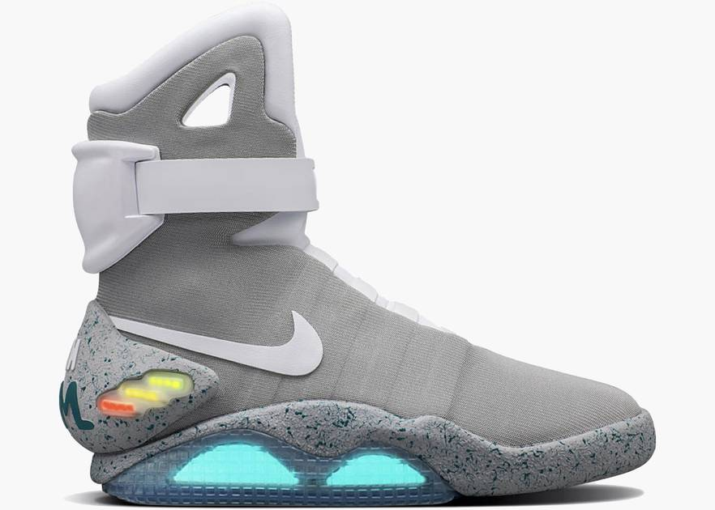

Nike Dunk-SB Low Paris
$81,200
There were only 202 pairs of the SB Dunk 'Paris' made back in 2003. The lively panels are cut from the printed artwork of Bernard Buffet, leaving no two pairs the same. They didn't go on sale until 2005, and made up part of the same city pack that featured the infamous Pigeon Dunk.
Nike MAG 'Back to the Future'
$114,000
Air Mags are expensive because of three main reasons. They featured in Back to the Future Part II, a show that was a hit even before its debut, the technology used to create the shoe, its scarcity (just a few pairs are made), and designer Tinker Hatfield who brought the dream to reality.
Jordan Retro 4 'Eminem Carhartt'
$23,000
There were only 202 pairs of the SB Dunk 'Paris' made back in 2003. The lively panels are cut from the printed artwork of Bernard Buffet, leaving no two pairs the same. They didn't go on sale until 2005, and made up part of the same city pack that featured the infamous Pigeon Dunk.
Air Jordan 1 High 'Mocha'

$350
There were only 202 pairs of the SB Dunk 'Paris' made back in 2003. The lively panels are cut from the printed artwork of Bernard Buffet, leaving no two pairs the same. They didn't go on sale until 2005, and made up part of the same city pack that featured the infamous Pigeon Dunk.
Air Jordan 1 High 'Dior'

$7,040
There were only 202 pairs of the SB Dunk 'Paris' made back in 2003. The lively panels are cut from the printed artwork of Bernard Buffet, leaving no two pairs the same. They didn't go on sale until 2005, and made up part of the same city pack that featured the infamous Pigeon Dunk.
Jordan Retro 11 'Space Jam'
$400
There were only 202 pairs of the SB Dunk 'Paris' made back in 2003. The lively panels are cut from the printed artwork of Bernard Buffet, leaving no two pairs the same. They didn't go on sale until 2005, and made up part of the same city pack that featured the infamous Pigeon Dunk.